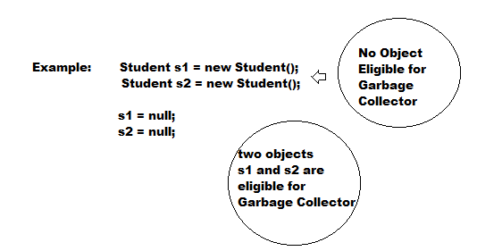
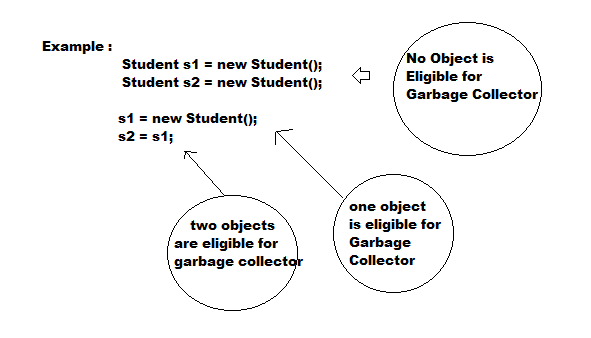
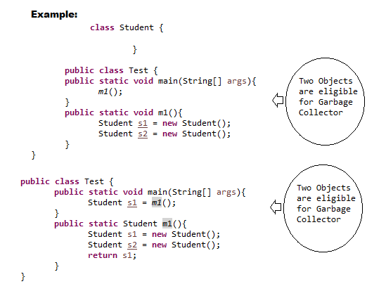

Various Ways to make a Object to Garbage Collector :
- Eventhough programmer not responsible to destroy objects but its always a good programming practice to make an object eligible for Garbage Collector , if it is no longer required .
- An object is said to be eligible for Garbage Collector if it does not contain any references .
- The following are various ways to make an object eligible for Garbage Collector .
Nullifying the reference variable:
- If an object no longer required then assign null to all its reference variable then that object automatically will become eligible for Garbage Collector .

Reassigning reference variable :
- If an object no longer required then reassign its reference variable to some other object then old object is by default eligible for Garbage Collector .

Objects created inside a method :
- The objects created inside a method are by default eligible for Garbage Collector once method completes .

The methods for requesting JVM to run Garbage Collector :
- Once we made an object eligible for Garbage Collector it may not be destroyed immediately by the Garbage Collector .
- Whenever JVM runs Garbage Collector then only that object will be destroyed but when exactly JVM runs Garbage Collector we can not expect it depends on JVM .
- Instead of waiting until JVM runs Garbage Collector , we can request JVM to run Garbage Collector but whether JVM accept our request or not there is no guarantee .
- But most of the times JVM will accept our request .
- The following are various ways for requesting JVM to run Garbage Collector .
By using System.gc();
- System class contains a static method gc() for this purpose .
By using Runtime class:
- A java application can communicate with JVM by using Runtime object .
- Runtime class present in java.lang package and it is a singleton class .
- We can create Runtime object by using Runtime.getRuntime() method .
Runtime r = Runtime.getRuntime();
- Once we get Runtime object we can apply the following methods on that object .
freeMemory()
- returns no. of bytes of free memory present in JVM .
totalMemory()
- returns no. of bytes of total memory on the Heap(i.e , Heap Size)
gc()
- For requesting JVM to run Garbage Collector .
- Note: gc() method present in System class is static method where as gc() method present in Runtime class is instance method .
- It is convenient to use System.gc() because it is a static method, but it is recommended to use Runtime class gc() method because internally System class gc() method calls Runtime class gc() .
finalization
- Just before destroying an object Garbage Collector calls finalize() method to perform cleanup activities .
- Once finalize() method completes automatically Garbage Collector destroys that object .
- finalize() method present in object class with the following declaration .
protected void finalize() throws Throwable
- Just before destroying an object Garbage Collector always calls finalize() method to perform clean up activities on that object then the corresponding class finalize() method will be executed .
- For example, if String object eligible for Garbage Collector then String class finalize() method will be executed, but not Test class finalize() method .